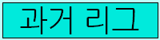
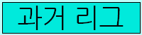
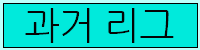
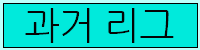

 


경기시작 15분전에 서버가 열립니다. 이때 접속하여 참가할 수 있습니다.
참여할 때 오믈렛 id를 말해주세요. 그러면 참여 자격이 부여됩니다.
경기가 시작되면 해당 맵의 규칙에 따라 진행됩니다.
초반무적이 종료되고 mute를 합니다. 그럼 답답하겠지만, 경기를 최대한 조작을 하지 않도록 하기 위한 방안이니 이점 유의하시기 바랍니다.
게임시작 20분후 건물안에는 못 들어가고 도로에서만 있을 수 있는 도로 모드가 적용됩니다.
해당 모드가 적용되고 1분뒤에도 건물에 있는 플레이어가 있으면 자동 탈락으로 처리해 kill하도록 하겠습니다.
게임시작 30분후 이래도 안끌나면 모든 생존자가 학교 운동장으로 tp됩니다.
그리고 그곳에서 최후의 생존자를 가르니다!
그러면 탈락을 하면 어떻게 하나요?
일반전은 관전이 가능하기 하지만, 리그에서는 관전이 불가능합니다. 그리고 상시 mute처리합니다.
mute을 안풀어주고 mayfly도 안한테니, 잠수 타지 말고 그냥 나가주시기 바랍니다...
그럼 탈락을 하면 다음 경기에 참여 못하냐요?
그렇지 않습니다! 다만 리그 규정을 위반하면 참여할 수 없습니다!
그럼 행운을 빌겠습니다.